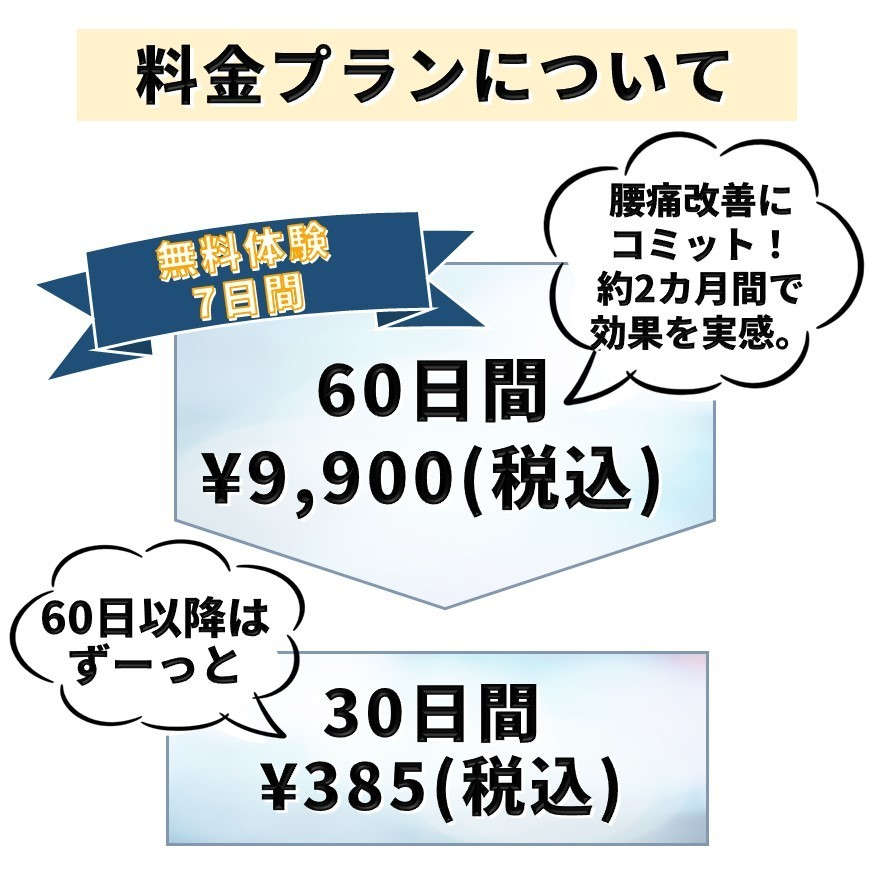

実は、腰痛患者の約8割は腰痛の原因を特定できずに正しい治療が受けられていない

早稲田大学スポーツ科学学術院教授
金岡恒治 先生
腰痛の原因をしっかり特定できれば腰痛は寛解できます
こんな経験はありませんか？

自分の腰痛の原因にあった対策をしなければもちろん改善につながりません
早稲田大学スポーツ科学学術院教授
金岡恒治 先生
痛みの原因にアプローチしないと❝再び腰が痛く
なる❞といった負のスパイラルが続きます
病態評価と運動療法がカギ！
自分の腰痛の原因となっている部位を特定し、原因に対してアプローチすることが改善するために最も重要です。


信頼できる専門医を探して、予約して、通院して、大変！
もしかすると近所で先生が
見つからないなんてことも…
＼予約3か月待ち／
腰の名医と開発！
腰痛改善アプリを作りました。
腰痛改善アプリ
『YO-TSU DOCTOR』の特徴
特徴1
臨床で300件以上の成功事例のデータからロジック開発
- 腰痛の名医として有名な早稲田大学スポーツ科学学術院教授・金岡恒治先生の患者さまにご協力をいただき、腰痛が改善した患者さまのデータから正確な問診と正しい病態評価のロジックを組みました。
特徴2
病院で専門医に診てもらうのと同じプロセスを再現
- 腰痛治療の最先端で活躍されている、金岡恒治先生（早稲田大学スポーツ科学学術院教授）と成田崇矢先生（桐蔭横浜大学スポーツ健康政策学部スポーツテクノロジー学科教授）に全面協力いただき、1年間の打ち合わせを重ね、病態評価までの過程を突き詰めました。
特徴3
自宅で自分の好きな時間に行うことができ、操作は簡単
＼今なら／
自分の腰痛の診断結果が無料で分かります。
あなたの
腰痛タイプは？
-
